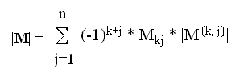
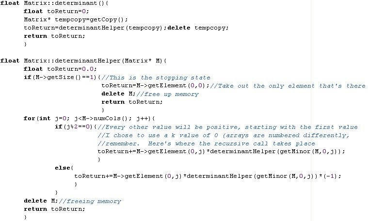
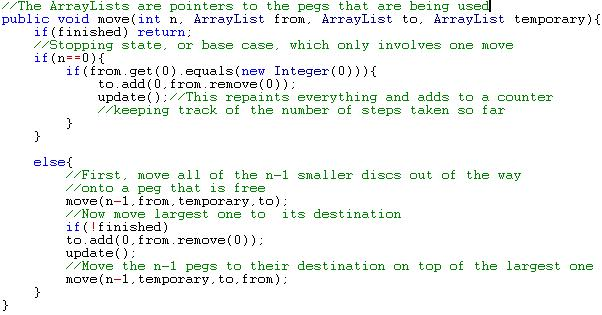
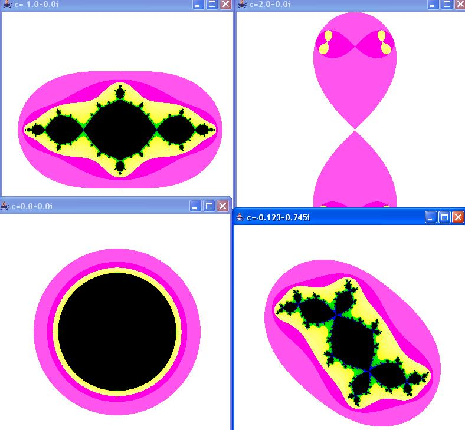

Something is said to be recursive if it is "self-similar." Hence, recursive functions are functions that call themselves. Recursive functions can be written mathematically, as you will see, but they are also supported in many programming languages, such as C++ and Java. It is easiest to understand what a recursive function is by looking at some examples. The following examples express the recursive functions both mathematically and in C++ syntax:
The answer is 38. To arrive at this answer, we first took f(6). Since 6>2, we had to figure out what f(6-1), or f(5), was before we could come up with a definitive, simplified answer. To figure out what f(5) was, we needed to figure out what f(4) was ; for f(4), f(3) was needed, and for f(3), f(2) was needed. Finally, when we got to f(2), we reached a point where we had a simplified numerical expression without a another recursive call intertwined. This is sometimes known as the stopping state of the recursion, for no more recursive calls are made after this point. The rest of the work after this point is straightforward. Since we know what f(2) is, we can now simplify f(3), which allows us to simplify f(4), and so on until we arrive back at f(6).
Here is an example from the 1996 ACSL senior contest #1, which can be found at acsl.org
f(5,5) = 5 (because 5=5 this is our stopping state)
f(7,4) = 5 + 3 = 8
f(6,7) = 8 + 2 = 10
f(8,6) = 10 + 3 = 13
f(10,5) = 13 + 3 = 16
Working carefully, it was possible to determine exactly how to calculate the recursive calls based on the relationship between x and y. Hopefully, you can see by this example that recursive calls aren't just limited to a single parameter
Two well-known examples of recursion are factorials and the Fibonacci sequence: As you may already know, the factorial of a number is the product of all of the natural numbers from 1 to the number in series, and it is signified by an exclamation point. For instance, 6! = 1*2*3*4*5*6 = 720. To avoid all of this wordiness, it is really quite simple to define the factorial in terms of itself as follows:
X! =
X * (X-1)!
when X>0
1
when X=0
Using our previous example with this model, f(6) = 6*f(5) = 6*5*f(4) = 6*5*4*f(3) = 6*5*4*3*f(2) = 6*5*4*3*2*f(1) = 6*5*4*3*2*1*f(0) = 720
The Fibonacci sequence is a very special type of sequence that can be found in nature and that is recursive by definition. It can be derived by using combinatorial methods. Specifically, we need to figure out the number of different ways to cover a board with N spaces with squares (take up one space) and dominoes (take up 2 spaces). Let's go through that thought process right now (squares are blue, dominoes are green, and gray is uncovered):
N
Different boards & Explanations
0
There is only one way to cover a non-existent board, and that is to not cover it at all (don't get hung up on this case...it's just important for establishing the recursive pattern later)
1
There is also only one way to cover this board: by using a single square
2
There are two ways to cover this board:
Case 1:
Case 2:
One way, we place a square in the first place, and the only way to cover the rest of the board is by placing another square in the remaining position. The other way, we place a domino in the first square, and we have no place left.
3
We can start out by establishing two cases for what to lay down first:
In the first case, we place a square in the first position:
This leaves two positions uncovered. We already know how many different ways there are to cover two blank positions (refer to N=2). Therefore, there are 2 ways to finish covering a board with a square in the first position:
OR
In the second case, we place a domino in the first position:
This only leaves one position uncovered. According to N=1, there is only one way to cover one position, and that is with a square. Therefore, the only possible combination here is the following:
The total number of ways to cover a board of length three is the number of ways to cover the board if a square is placed in the first position plus the number of ways to cover the board if a domino is placed in the first position. This is 1 + 2, orthree ways
4
Just as we did with case 3, place either a square or a domino in the first position, and figure out how many different combinations exist within the two cases:
Placing a square in the first place leaves three spaces open:
From N=3, we already know how to cover the remaining spaces, so there are 3 combinations possible in this case (apply them in the order that they were discovered in case 3):
Placing a domino in the first places leaves two spaces open:
From N=2, we already know that the only two ways we can cover the remaining space is either by placing two squares or by placing a domino there:
Hence, there are five ways to cover a board of length four
By now, a recursive pattern should be evident for counting these boards (or, at least I hope it is, because I'm getting really tired of writing all of the HTML code to make those colored blocks). After establishing the base cases of 0 and 1, we can count the boards for any N>1 by placing a square and then counting the number of ways to fill the spaces left, or by placing a domino and counting the number of ways to fill spaces left. As a mathematical formula, the Fibonacci sequence goes like this:
Fn =
Fn-1 + Fn-2
when n>1
1
when n=0 or n=1
Where Fn-1 counts the number of ways with a square in the first place, and Fn-2 counts the number of ways with a domino in the first place.
The sequence, therefore, goes 1,1,2,3,5,8,13,21,34,etc.
Another very common mathematical operation that can be defined recursively is the Determinant of a square matrix. Before going on, recall how to do expansion by minors. If you had the following 3x3 matrix M (pretend that there are square brackets around the numbers):
1
4
7
3
9
2
6
2
3
Then M{2,1} (a minor) would be a 2x2 matrix, excluding all of the elements of M in row 2 and column 1:
4
7
2
3
If you've done this before, then you probably know how to take |M| (the two straight lines on either end signify the determinant) or the determinant of any 3x3 matrix
1
4
7
3
9
2
6
2
3
= 1*
9
2
2
3
- 4*
3
2
6
3
+ 7*
3
9
6
2
=
1*(9*3 - 2*2) - 4*(3*3 - 6*2) + 7*(3*2 - 6*9)
=
-301
If you think carefully about the process that we just went through to calculate the determinant, then the recursive equation becomes more evident:
For an n x n matrix M, k is any constant less than or equal to n and greater than or equal to 1, Mkj simply means the element in row k and column j, and M{k,j} is the minor of row k and column j

(we used k=1 in our example)
The recursive calls, then, are the determinants of each minor in the sum. The stopping states occur with 1x1 matrices, whose Determinants are simply defined as the only value in the matrix (e.g. |6| = 6).
Now, let's apply that general equation to the example that we did earlier using specific cases for 3x3 and 2x2 Determinants:
A while back, I wrote some code in C++ to take care of the determinant of a matrix (I needed it for some 3D calculations I was doing in a video game). It goes as follows:

Obviously, this code wouldn't just work if you plopped it into a program. I had already defined an entire matrix class around these functions, and I didn't even show you the code for the getMinor(Matrix* , k, j) function. But I think it proves the point that recursive functions are relatively easy (not to mention elegant) to implement in programs, even for seemingly tedious operations (this would work for any n x n matrix that memory could conceivably support).
The "Towers of Hanoi" is a classic puzzle game that has been around for millennia. It consists of three pegs with a number of different discs stacked on top of each other such that a disc is never below another disc that is larger than itself. The object of the game is to move all of the discs from the left peg to the right peg, moving one disc at a time and making sure never to put a larger disc on top of a smaller disc.
To come up with a recursive equation for the number of moves needed, let's look at some cases:
Case 1: This is easy; we simply move the one disc from the left peg to the right peg (1 move)
Case 2: First, move the smallest disc on top to the middle peg. Then, take the remaining disc (the larger one) on the left peg and move it to the right peg. Lastly, put the smallest disc that is now on the middle peg on top of the larger disc on the right peg. This takes (3 moves)
Now that we have a base case, let's look at the problem for any N number of discs. First, pretend that we know everything there is to know about the number of moves that it takes to move N-1 discs (HN-1, where H is the function that describes the number of steps needed for a given number of discs). We can use this information to figure out how many moves it will take to move N discs by using the following logic:
First, move the (N-1) discs currently on top of the largest disc from the left peg to the center peg. This takes HN-1 steps.
Now that there are no smaller discs on top of the largest disc and the right peg is open, move the largest disc to the right peg. This takes 1 step
Now that we can move smaller discs on top of the large disc on the right peg legally, move the N-1 discs currently on the center peg to the right peg on top of the largest disc. This takes HN-1 steps.
As you can see, it takes 2H(N-1) + 1 steps to move N discs from the left peg to the right peg:
Hn =
2Hn-1 + 1
when n>1
1
when n=1
Plugging this in for case 2, we see that the answer is 2(1) + 1, or 3, which is what we got before.
There may have been some ancient Hindu prophecy that if a whole bunch of Brahmin priests were working on this puzzle at all hours of the day with 64 discs from the beginning of time, then the world would end as soon as they solved the puzzle. Luckily, we don't have much to worry about if we look at the recursion:
H64 = 1.844674407 x 1019 (thank you TI calculators)
If a priest made a move every second, and there are 31536000 seconds in a year (365*24*3600), then this would take at least 5.848424174 x 1011 (nearly 585 billion) years to complete. Just for a comparison, the universe is only about 13.7 billion years old. Also, keep in mind that the recursive solution is the shortest solution possible.
I made an applet to solve the Towers of Hanoi problem graphically for any number of discs (obviously, don't choose too many, or you might be sitting in front of your computer for a while). Click here to see the source code. The most important part is highlighted below:

By the way, if we wanted to avoid recursive calculations (it takes a long time to go through all of the iterations for large numbers), we can come up with a "closed-form" expression for the number of steps. That is, if n represents the number of discs present, then 2n-1 represents the number of steps. This is clearly easier than using the recursive equation, but the recursive equation describes the behavior of the puzzle better (and is obviously better for writing programs that simulate that behavior).
Fractals are complex, beautiful images that are the epitome of self-similarity. They have ties to chaos theory, limit theory, and all sorts of other branches of mathematics. You can find out more about them at http://classes.yale.edu/fractals/, which I highly recommend. I'm only going to go through here and talk about what different examples look like, why they are self-similar, and how to write code to generate them (I've made applets to draw every one). However, you can learn more about fractal dimensions, etc. on your own if it interests you. Here we go....
The Sierpinski Gasket:
The Sierpinski Gasket is generated by taking a colored equilateral triangle and connecting the midpoints of the three sides. This forms four new congruent, equilateral triangles that are similar to the original one (they are all half of its size). Color the three outer triangles black, and leave the middle one uncolored. Then, repeat the process for each of the three colored triangles. Now, you should have 9 colored triangles. Repeat the process for these 9 triangles, and continue to repeat the process for all of the colored triangles formed onto infinity for infinite precision (or until you run out of adequately sized pixels, like I do in my applets). Click here to see this process being carried out graphically.
As you can see, each recursive call branches out on a new colored, equilateral triangle, and the shape is self-similar in many ways.
A related fractal is the Sierpinski Carpet, which involves creating a bunch of similar, colored rectangles. I have created an applet below using the random algorithm to generate the Sierpinski Triangle and the Sierpinski Carpet. The source code can be found in Triangle.java and Carpet.java
NOTE: The more points you draw, the more precise the drawings of each shape will be (fractals are infinitely precise theoretically) NOTE ALSO: This Sierpinski Triangle can also be generated by coloring in all of the odd numbers in Pascal's Triangle.
The Koch Curve:
To create a Koch Curve, first start out with a line segment of length L. Then, divide the line segment up into three equal parts of length L/3. From the two points where the line segments meet, construct an equilateral triangle by drawing lines 120 degrees from the left and right line segments and marking off their intersection. Remove the base of this equilateral triangle, which was originally the middle of the three line segments. Continue this process on the four new line segments. Click here to see this process being carried out graphically.
I also made an applet to draw this shape, although the picture does a good enough job of showing it. I would just like to highlight the recursive part of the program:
public void drawCurve(double length){ double newLength=length/3; if((int)length==minPixelLength){//This is the stopping state limited
//by the resolution on the screen. In reality, though, the process
//would continue on infinitely
pencil.move(length); return;//No more recursive calls occur after this point
}
drawCurve(newLength);//This is the recursive call to the leftmost segment
pencil.turn(60);
drawCurve(newLength);//This will draw the left side of the peak of the equilateral triangle
pencil.turn(-120);
drawCurve(newLength);//This will draw the right side of the peak of the equilateral triangle
pencil.turn(60);
drawCurve(newLength);//This draws the rightmost line segment
}
Julia Sets are created with the following recursive equation:
zn+1 = zn2 + c
Where z and c (a chosen constant) are both complex numbers.
To create a Julia set, different values of z0 are chosen and iterated through the recursive function until they "escape." This usually means that the points after zn are beyond a certain distance from the origin on the complex plane, which is usually 2 (this is the r value in polar coordinates, or (real component2 + imaginary component2)1/2 in rectangular coordinates). We choose to color that particular z0 a very light color if the point escaped quickly, or a darker color if it didn't escape at all. Let's look at an example:
Let c=-1 and z0=1.1i
z1 = (1.1i)2 -1 = -2.21
z2 = (-2.21)2 -1 = 3.8841
In this case, it only takes until z1 until we have escaped, and the z values move off very quickly towards infinity after this. Hence, since it only took one step for this value of z0 to escape, we would color the pixel at (0,1.1i) white.
Here is the applet that I made to draw these Julia Sets by doing tons of these calculations for different values of z0:
"t l" is the complex number for the top left corner of the rectangular area of the fractal, and "l r" is the complex number for the lower right corner (these set the bounds to be checked).
Try different values of c for different patterns
Choose a higher resolution for the width and the height to get more precision
If you continually zoom in on certain interesting-looking areas, you will see that the fractal has infinite precision (you can keep zooming in as long as you like, and the pattern will never end!)
Go to JuliaSet.java for the source code
Just in case the applet doesn't work for you for some reason (please let me know if this is the case, and tell me the error), here are some screenshots of my program in action:
